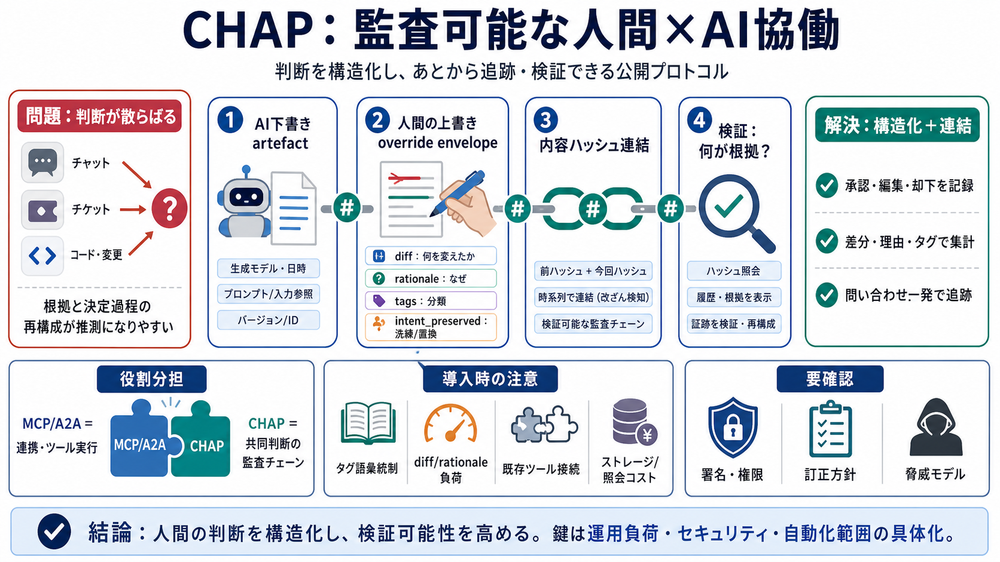

Where
chat / ticket / code
CHAP（Collaborative Human-Agent Protocol）は、人間とAIエージェントの共同作業で生じる「判断（承認・編集・却下など）」を、後から追跡・検証できる形で保存する公開プロトコルです。
判断がチャットやチケットコメント、アプリの内部ロジックに分散すると、時間が経った後に「何が根拠でどう決まったか」を再構成しにくくなります（推測が混ざる）。
CHAPは、AIの下書き（artefact）と人間の構造化された上書き（diff / rationale / tags等）を「監査チェーン」として、内容ハッシュで前後をつなぎます。
CHAPの核は「override envelope（上書きのエンベロープ）」です。人間がどのように承認・編集・却下したかを、diff・rationale・tagsなどで表現してチェーンに載せます。
intent_preservedは「上書きされた事実」だけでなく、その修正が refining（表現の洗練） か substituting（決定変更） かを判別し、原因の切り分けを助けます。
tagsは自由入力ではなく、チームで小さく統制することで、3か月後に「どのプロンプト／どのパスで繰り返し間違えるか」を集計できるデータになります（後日の学習・改善の基盤）。
CHAPの問いは一つに寄せられます：後日、チェーン上の差分・理由・分類を辿って「何が根拠でどう変えられたか」を検証します。
CHAPはMCPやA2Aの代替ではありません。MCP/A2Aはツール実行やエージェント連携を担い、CHAPは人間が介入した判断を監査可能にする“交通整理”として周辺に位置付けられます。
リポジトリには仕様、リファレンス実装（TypeScript / Python）、適合性ハーネス、MCPサーバ移送、A2Aサーバ移送、フレームワークブリッジなど、実運用に近い形での構成要素が含まれます。
導入の摩擦は、tags語彙統制、rationale/diff作成の運用負荷、既存ワークフロー（例：Cursor）への組み込み手間、監査チェーン管理に伴うストレージ/運用コストに出る可能性があります。
セキュリティ面では「署名（security-signed / 1.0等）」がオプトインとして示され、SCITTなどの選択肢もある一方、どの脅威モデルに対してどの設定が適切か、設定ミスがどれほど致命的かは追加の実務ガイダンス確認が必要です。
CHAPは「人間の判断を構造化し、内容ハッシュ連結で検証可能性を確保する」ための進んだプロトコルです。導入判断では、運用負荷・セキュリティ/ガバナンス要件・自動化範囲と人手範囲を具体化するのが鍵になります。

本デッキは、ユーザーが提示した「BrightbeamAI / chap（CHAP）」README相当の要約・抜粋テキストに基づき、情報を16:9の読みやすいスライドに圧縮しました。
No references found